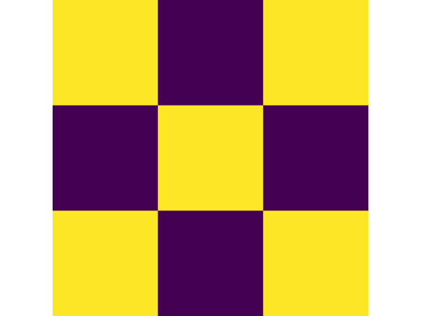
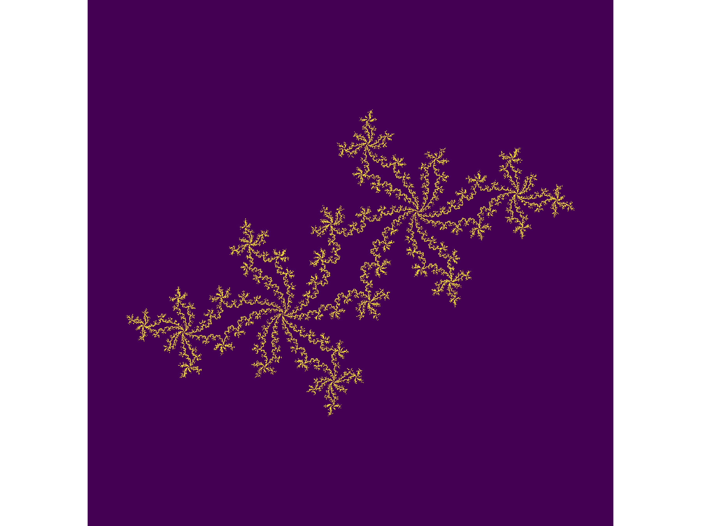
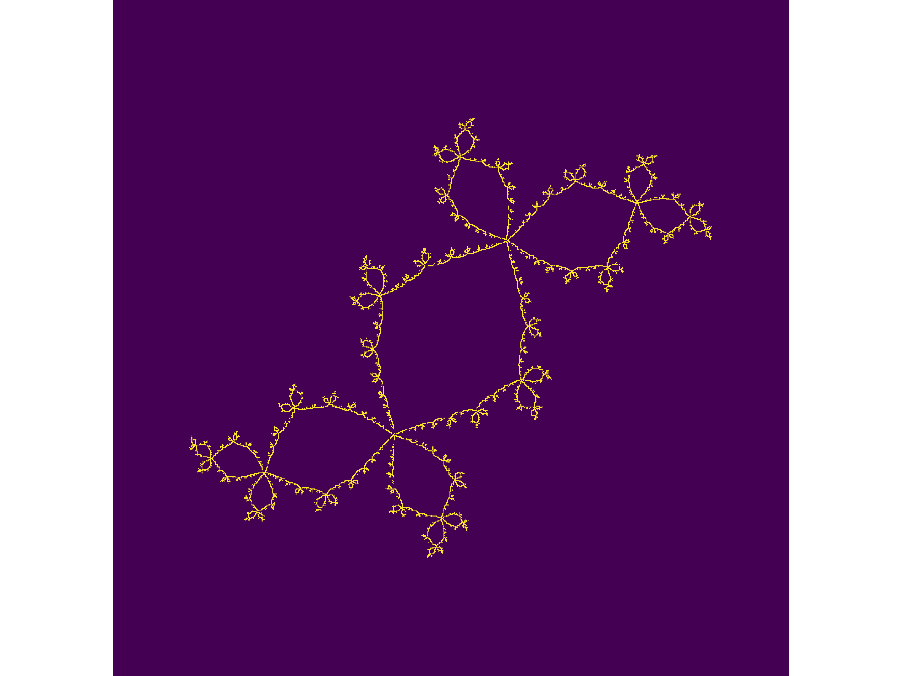
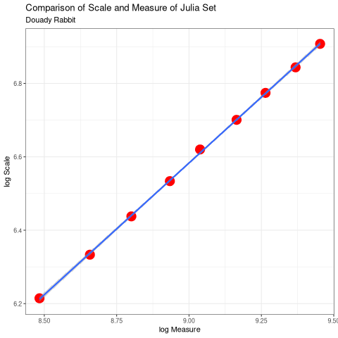

The Emergence of Order
Ryan & James
Created: 2020-11-11 Wed 17:05
1 Introduction
- Looked at the emergence of patterns from natural and iterative processes.
- This lead to an investigation of fractals mostly
2 Definition of a Fractal
- Shapes with a complex structure
- Tend to exhibit self-similarity
- Although they may not!
2.1 Examples of Fractals
To motivate the concept, here are some fractals we generated in our investigation:
- Self-Similar Fractals
\begin{align*}
\mathbf{B} \leftarrow
\begin{bmatrix}
\mathbf{B} & \mathbf{Z} & \mathbf{B} \\
\mathbf{Z} & \mathbf{B} & \mathbf{Z} \\
\mathbf{B} & \mathbf{Z} & \mathbf{B} \\
\end{bmatrix}
\end{align*}
where:
- \(\mathbf{B}= \left[ 1 \right]\)
- \(\mathbf{Z}= \left[ 0 \right] \)
Vicsek’s Fractal

\begin{align*}
\mathbf{B} \leftarrow
\begin{bmatrix}
\mathbf{B} & \mathbf{B} & \mathbf{B} \\
\mathbf{B} & \mathbf{Z} & \mathbf{B} \\
\mathbf{B} & \mathbf{B} & \mathbf{B} \\
\end{bmatrix}
\end{align*}
Sierpinski’s Carpet
- Can also use the Chaos Game
Sierpinski’s Triangle

- Can occur from natural phenomena like iteratively folding something:
Dragon Curve
- and sometimes thay just fall out of otherwise simple math:
\[ z \leftarrow z^{2} + c \]

- What follows is an illustration of all the points that converge to zero for values on the circle:
\[ z \leftarrow z^{2} + e^{i \frac{9k}{2}} \]

- How do we define what a fractual really is?
2.2 Mandelbrot

- This has since been rejected and is somewhat unresolved! See e.g.
- Falconer, K. J., Fractal geometry: mathematical foundations and applications
2.3 The Fractal Dimension
For ordinary shapes:
\begin{align*}
\left(\frac{s_{2}}{s_{1}}\right)^{D} &= \left(\frac{m_{2}}{m_{1}}\right) \\
\ \\
\implies D &= \log{\frac{s_{2}}{s_{1}}} \div \log{\frac{m_{2}}{m_{1}}}
\end{align*}
- This can be used with fractals
Fractals that are not self similar still have a constant dimension, it is the coefficient of the linear regression:
\begin{align*}
\mathtt{coef}\left(\log \frac{s_{2}}{s_{1}} \sim \log \frac{m_{2}}{m_{1}}\right)\mathtt{[1]}
\end{align*}
\[z \leftarrow z^2 + -0.123+0.745*i\]

By Scaling this fractal and comparing the measure and scale:
| Scale | Measure |
|---|---|
| 500 | 4834.0 |
| 563 | 5754.0 |
| 625 | 6640.0 |
| 688 | 7584.0 |
| 750 | 8418.0 |
| 813 | 9550.0 |
| 875 | 10554.0 |
| 938 | 11710.0 |
| 1000 | 12744.0 |
Dimension of 1.37 (should be 1.39).
